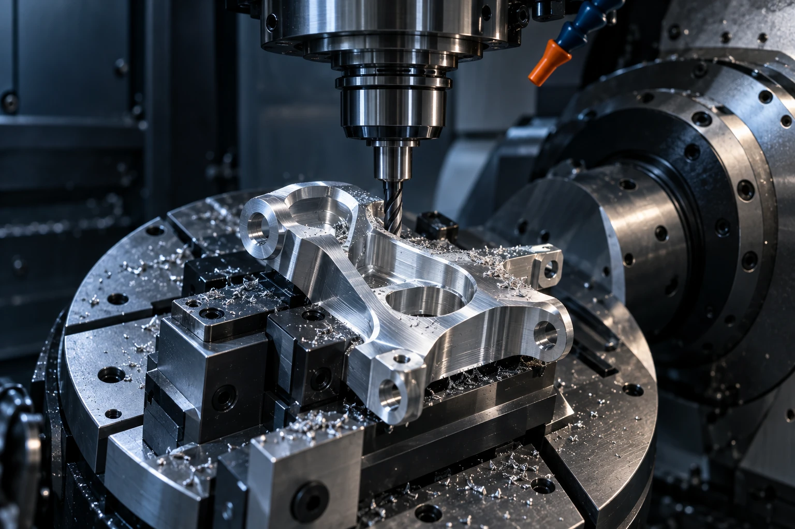
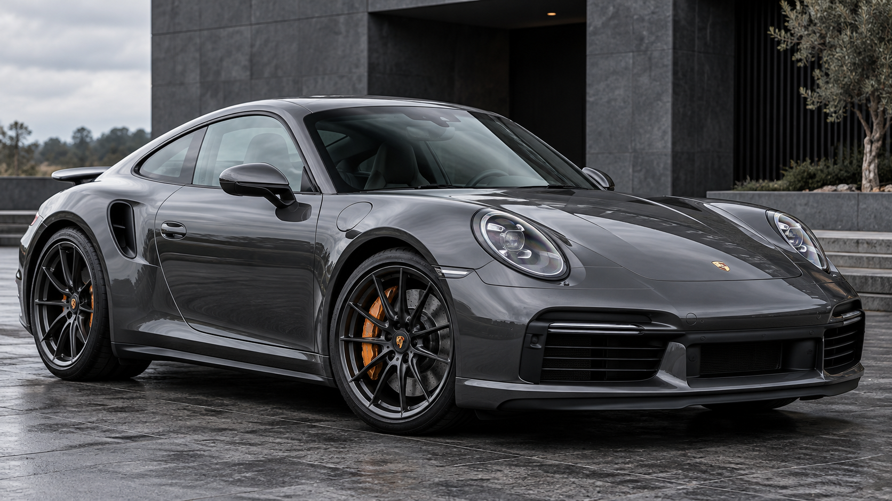
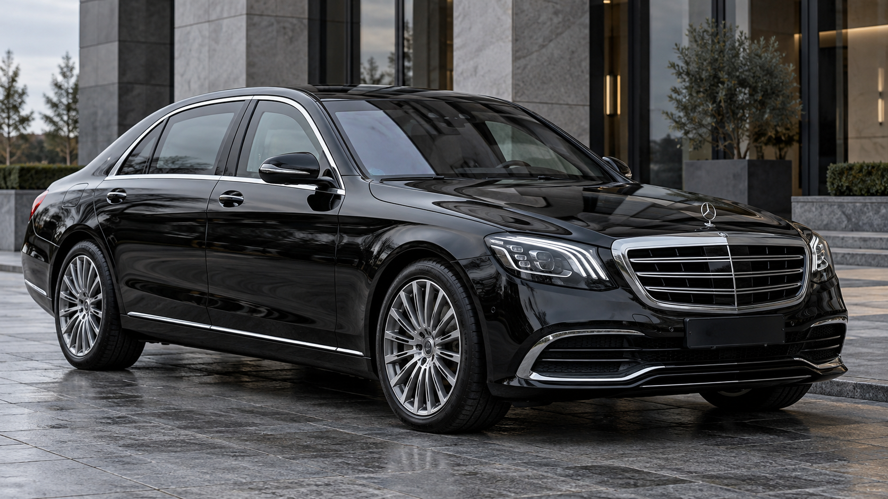
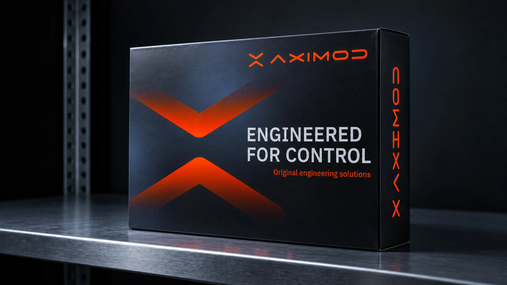

Свобода руху починається з контролю.
AXIMOD — інженерна компанія, що розробляє гальмівні системи та компоненти під конкретну задачу автомобіля.
Чотири конфігурації. Точний підбір під вас.
Диск, супорт і гідравліка — одна система. Підбираємо її під ваш автомобіль, колеса та режим їзди.
6 поршнів
Компактна система
8 поршнів
Для більших вузлів
10 поршнів
Висока потужність

Точність — це процес.
Технічне рішення починається задовго до виготовлення. Спочатку — вимоги. Потім — геометрія, матеріал і спосіб інтеграції.
- Геометрія
- Посадки, зазори й точки кріплення розглядаються у зв’язку з усім вузлом.
- Матеріал
- Вибір залежить від функції деталі, умов роботи та технології обробки.
- Сумісність
- Параметри компонентів узгоджуються до переходу до виготовлення.
Потужність. Маса. Ваш сценарій руху.

Спортивні автомобілі
Термостабільність, точний відгук і контроль під час активної їзди.

Броньовані представницькі
Індивідуальний підбір з урахуванням збільшеної маси та балансу обох осей.
Від задачі до узгодженого рішення.
Вихідні дані
Автомобіль, маса, потужність, колеса, наявна система та умови експлуатації.
Концепція
Компонування вузла, геометрія монтажу та необхідні зміни конфігурації.
Виготовлення
Підготовка деталей і CNC-компонентів за погодженими вимогами проєкту.
Інтеграція
Узгодження встановлення та необхідних перевірок для конкретного автомобіля.

ENGINEERED FOR CONTROL
Функція визначає форму.
Точність визначає результат.
Що потрібно для старту?
Не обов’язково мати готове технічне завдання. Почніть з автомобіля та задачі, яку хочете вирішити.
- 01
Автомобіль
VIN, марка, модель, рік і поточна конфігурація.
- 02
Умови використання
Тип поїздок, навантаження, зміни маси або потужності.
- 03
Наявні компоненти
Параметри передніх і задніх коліс, гальмівної системи, фото чи креслення вузла.
- 04
Очікуваний результат
Що потрібно змінити та які обмеження врахувати.
Перед початком.
Чи є універсальна конфігурація? +
Рішення залежить від геометрії автомобіля, коліс, маси та умов експлуатації. Саме тому конфігурацію потрібно узгоджувати індивідуально.
Чи можна почати без креслень? +
Так, початкову задачу можна описати словами й доповнити фотографіями. Перелік необхідних вимірів і технічних даних визначається під час опрацювання.
Від чого залежать вартість і строки? +
У презентації вказано 5–7 робочих днів на індивідуальну підготовку: інженерію, обробку й адаптацію. Точний строк і вартість узгоджуються після визначення конфігурації та обсягу робіт.